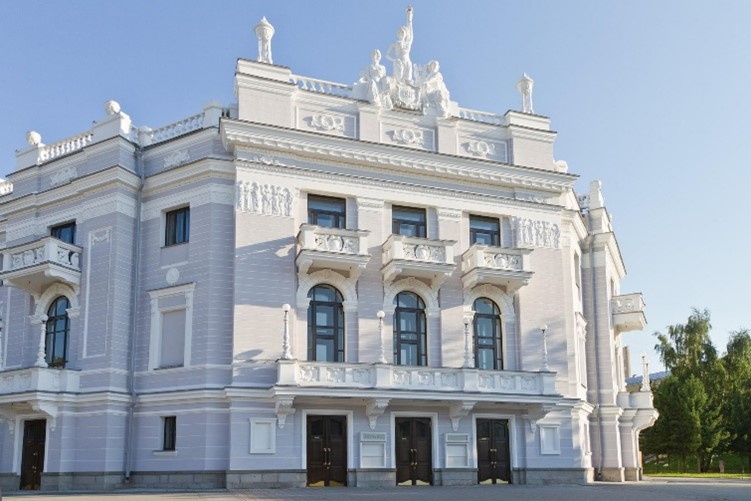
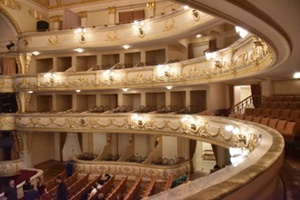

Екатеринбургский государственный
академический театр оперы и балета
В 1990-е годы, после распада СССР, театр переживал кризис, испытывая недостаток финансирования. Усилиями его тогдашнего директора В. С. Вяткина был создан попечительский совет, привлечена спонсорская помощь крупнейших екатеринбургских объединений и банков. Заметно возросли творческие контакты с зарубежными деятелями театра («Тоска» 1992, «Трубадур» 1995, оба — реж. М.-Ф. Сичилиани). Для организации гастрольной деятельности в 2000-е годы в театре был создан международный отдел. Гастрольные маршруты труппы — более ста городов в России и бывшем СССР, участие в театральных фестивалях в стране и за рубежом. У театра сложились культурные связи и творческие контакты с Италией, Германией, США, Англией, Кореей. На его сцене выступают именитые гастролёры, проходят музыкальные фестивали.
Художественный руководитель Урал Оперы — Светлана Зализняк, солистка оперы в 1966—2001 годах.
Художественный руководитель Урал Балета — Вячеслав Самодуров, артист балета в 1992—2011 годах, хореограф.
Директор театра — Андрей Шишкин (с 2006).
Среди недавних постановок:
«Amore Buffo» на музыку Г. Доницетти (2012), «Борис Годунов» М. Мусоргского (2013), «Пассажирка» М. Вайнберга (2016), «Ромео и Джульетта» С. Прокофьева (2016), «Руслан и Людмила» М. Глинки (2010), «Сатьяграха» Ф. Гласса (2014), «Севильский цирюльник» Дж. Россини (2003) и многие другие.
 